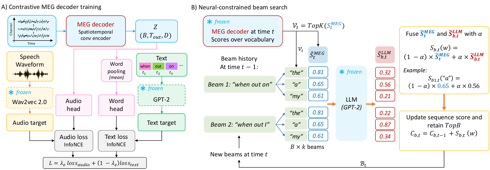
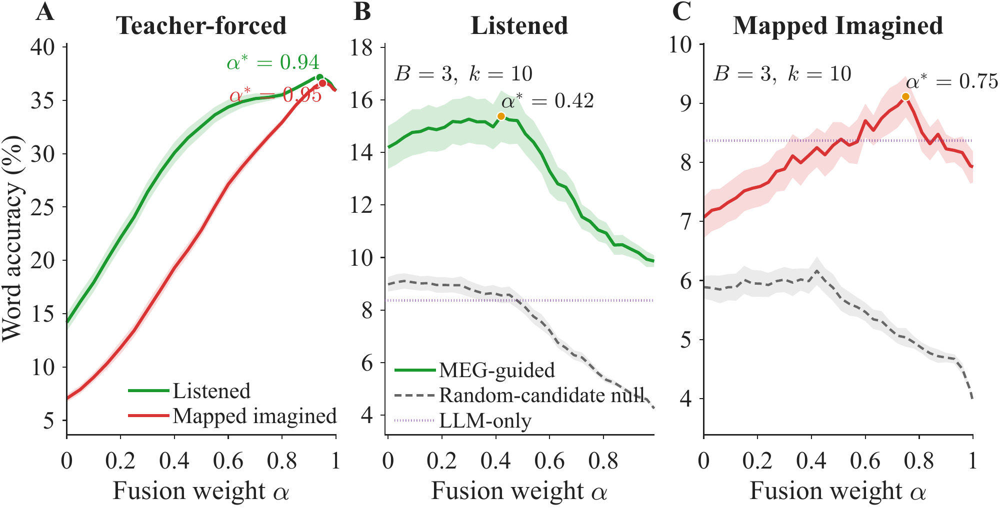
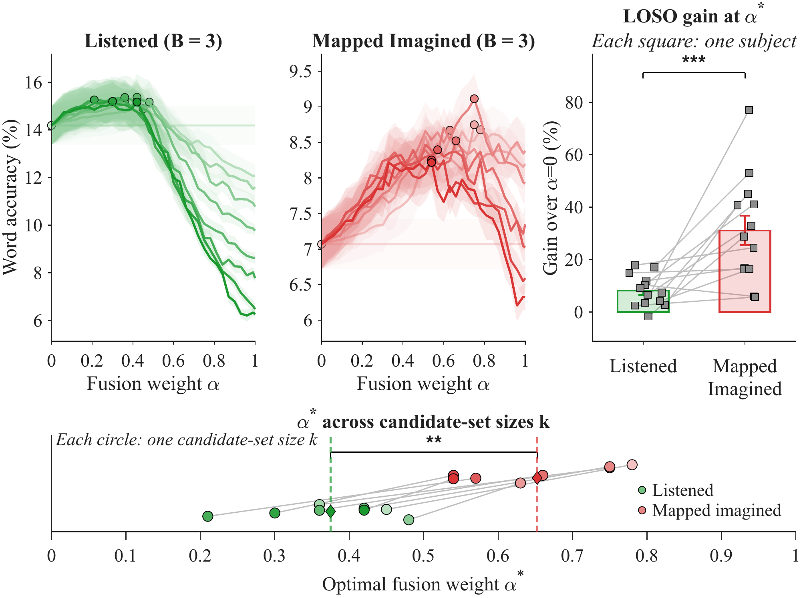

Abstract
Decoding imagined speech from brain signals matters for brain-computer interfaces, but imagined-speech responses are weak, noisy and scarce. We ask whether language models help, and whether they help listened and imagined speech to the same degree.
Using a paired listened/imagined MEG dataset, we bring language-model information in at two stages. During training, a contrastive neural decoder aligns MEG with acoustic and language representations, which improves cross-subject word decoding in both conditions. At inference, a neural-constrained beam search combines neural evidence with language-model next-word probabilities. Imagined speech benefits more: its optimal balance moves toward the language model, and its gain over neural-only decoding is larger.
Method
Seventeen participants listened to and imagined two 27-second poems, ten repetitions per condition; 13 remained after quality control. Imagined MEG is mapped to estimated listened responses with a leave-one-subject-out mapping model [11], using six mapping variants whose results are averaged.

Results
The contextual decoder
Word decoding on held-out subjects, scored against the full candidate bank. The proposed decoder improves sharply on the previous one for listened MEG and carries over to mapped imagined MEG, where it beats the shuffled control for all six mappings at top-1 and top-5 (p < 0.001).
| Input | Decoder | Top-1 (%) | Top-5 (%) |
|---|---|---|---|
| Listened | Previous [11] | 1.44 ± 0.16 | 7.45 ± 0.60 |
| Listened | Proposed | 14.17 ± 0.81 | 46.96 ± 1.56 |
| Listened | Proposed, shuffled | 4.12 ± 0.10 | 18.41 ± 0.18 |
| Mapped imagined | Previous [11] | 1.26 ± 0.09 | 6.71 ± 0.21 |
| Mapped imagined | Proposed | 7.05 ± 0.35 | 31.14 ± 0.97 |
| Mapped imagined | Proposed, shuffled | 3.93 ± 0.08 | 18.69 ± 0.14 |
Table 1. Mean ± SEM across held-out subjects (LOSO). Imagined results average six imagined-to-listened mappings. "Previous" is the decoder of [11]; "shuffled" trains on shuffled neural targets.
With an all-zero MEG input, accuracy falls to chance. The acoustic objective also matters: trained on the language objective alone, the decoder can score above chance by predicting frequent words. Mapped imagined top-1 is about half of listened top-1, so imagined responses carry weaker neural evidence.
Adding the language model
- Teacher forcing hides the trade-off. When GPT-2 sees the true history, accuracy keeps rising with α until α is close to 1 and both conditions converge. Neural evidence adds little once the context is perfect.
- Beam search has an interior optimum. With the beam's own history (B = 3, k = 10), both conditions peak at an intermediate α, and joint scoring beats MEG-only ranking in both (p < 0.001). Both stay above the random-candidate null at every α.
- The endpoints flip. For listened MEG, MEG alone (α = 0) beats the language model alone (α = 1), and fusion stays above the LLM-only baseline at every α. For mapped imagined MEG the order reverses, and fusion beats LLM-only only in a window near its optimum.
- Imagined speech leans further toward the language model. Across candidate-set sizes k, the optimal α* is higher for mapped imagined than for listened MEG (p < 0.01), and the relative gain over MEG-only ranking at α* is larger (p < 0.001). The fall-off toward α = 1 steepens as k grows.
The same pattern appears when GPT-2 is replaced with SmolLM, so the effect is not specific to one language model.


Limitations
Two poems, a closed vocabulary, 13 participants who are all musicians, and known word boundaries. Leave-one-subject-out tests generalization to new people, not to unseen stimuli or continuous speech.
Code
Everything for this paper lives in unified/contrastive_multimodal_v2. Scripts are run from inside that folder.
- Data and targets
teacher_cache.py- Builds the frozen wav2vec 2.0 and GPT-2 targets for both poems once and saves
teacher_cache.pt. new_dataset.py- Loads whole MEG trials with word onsets and offsets.
splits.py- Leave-one-subject-out splits; a trial is never split across partitions.
- Decoder
new_models.py- Causal convolutional MEG encoder and the frame and word projection heads.
pooling.py- Per-word pooling: mean over the word span (
exact) or learned attention over a wider window (wide). losses.py- Frame-level InfoNCE, word-level multi-positive InfoNCE and the λ anneal.
train.py- Trains the decoder for one held-out subject with early stopping.
- Evaluation
eval_stage1.py- Top-1 and top-5 word accuracy, with zero-MEG and time-shuffled controls.
new_controls.py,metrics.py- Control datasets, label-aware top-k scoring and chance levels.
fusion_teacher_forced.py- Teacher-forced fusion sweep over α (upper bound).
fusion_beamsearch.py- Neural-constrained beam search, swept over α.
fusion_beamsearch_null.py- Same search with random candidates in place of the decoder's top-k.
imagined_eval/- The three fusion scripts above, run on mapped imagined MEG.
plot_beam_grid.py,plot_beam_k_overlay.py- Figures for the B × k × α sweeps.
Running it
Install Python 3.10+ and the dependencies.
pip install torch torchaudio transformers numpy nltk matplotlib pip install openpyxl # optional, for colour-coded Excel tracesPoint the data paths at your copy of the dataset:
MEG_BASEandONSET_DIRat the top ofnew_dataset.py, andONSET_DIRandAUDIO_DIRin the__main__block ofteacher_cache.py. Then build the targets.python teacher_cache.pyTrain one decoder per held-out subject. The defaults already use wav2vec 2.0 layer 6, GPT-2 layer 8 and the cosine anneal;
--pooling_mode exactgives the mean-pooled words used in the paper.python train.py --heldout_subject sub-01 --pooling_mode exact \ --out_dir checkpoints/joint_annealed_exactScore word decoding with its controls.
python eval_stage1.py --heldout_subject sub-01 \ --stage1_checkpoint_path checkpoints/joint_annealed_exact/stage1_best_sub-01_joint_annealed_exact.pt \ --zero_control --shuffle_controlRun the fusion experiments. Use
row_zscoreto match the paper; B = 3 and k = 10 are the settings shown in Figure 2.python fusion_teacher_forced.py --heldout_subject sub-01 --normalization row_zscore --plot python fusion_beamsearch.py --heldout_subject sub-01 --normalization row_zscore \ --beam_width 3 --top_k 10 --out_dir fusion_grid --plot python fusion_beamsearch_null.py --heldout_subject sub-01 --normalization row_zscore \ --beam_width 3 --top_k 10 --seed 0 --plotRepeat on mapped imagined MEG. These scripts read predicted-listened trials from
predicted_npy/<mapping_key>/, produced by the imagined-to-listened mapping of [11].python imagined_eval/fusion_beamsearch_imagined.py --mapping_key RNN_full \ --normalization row_zscore --beam_width 3 --top_k 10 \ --out_dir imagined_eval/fusion_grid_imaginedPlot the sweeps.
python plot_beam_grid.py --fusion_results_dir fusion_grid python plot_beam_grid.py --fusion_results_dir imagined_eval/fusion_grid_imagined --mapping_key RNN_full
Paper settings and their flags
| Paper | Code |
|---|---|
| Acoustic target, ℓa = 6 | --audio_layer (default 6) |
| Language target, ℓw = 8 | --gpt2_mid_layer (default 8) |
| λ cosine anneal 0.8 → 0.2, 15 epochs | --anneal_mode joint_annealed --anneal_epochs 15 |
| Mean-pooled MEG per word | --pooling_mode exact |
| Per-position z-scoring | --normalization row_zscore |
| Beam width B, candidates k | --beam_width, --top_k |
| Other language models (e.g. SmolLM) | --llm_name |
Citation
@article{maghsoudi2026integrating,
title = {Integrating Language Models into Listened and Imagined Speech Decoding from MEG},
author = {Maghsoudi, Maryam and Kankanala, Sai Samrat and Shamma, Shihab A. and Ganapathy, Sriram},
journal = {arXiv preprint arXiv:2609.31997},
year = {2026}
}